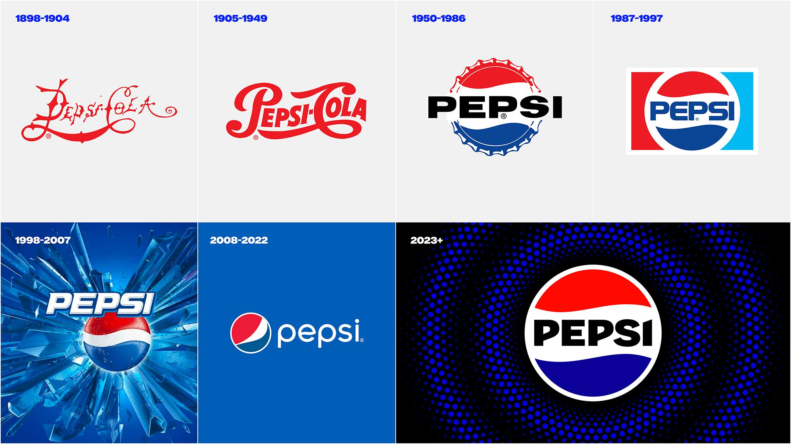

Blast to the Past: Why Nostalgic Logos Are Winning Over Gen Z

Logos are no longer just a visual afterthought, they’re a statement. After years of minimalist trends, brands are rediscovering personality, nostalgia, and authenticity to capture the attention of younger consumers. And it’s working.
Nostalgia is the New Modern
Pepsi’s bold 2023 rebrand marked a turning point. The company revived its iconic 1980s-inspired look, but with a modernized color palette and digital-friendly flair. Shortly after, Mountain Dew followed with a similar return to its roots, energized, nostalgic, and unmistakably authentic.
These updates aren’t just cosmetic. They reflect a larger movement in branding, one that recognizes the power of familiarity. Consumers aren’t drawn to sterile simplicity anymore; they want logos that tell a story and feel human.
When Industry Leaders Set the Tone
As a Fortune 500 leader in the snack and beverage industry, PepsiCo’s decision could set the standard for others to follow. Its success shows that major companies are willing to challenge design conventions and embrace what worked in the past, while evolving for the future.
But with artificial intelligence increasingly integrated into creative processes, brands must tread carefully. AI can accelerate design innovation, but it can’t replace authenticity. Missteps, like Coca-Cola’s controversial AI-driven holiday campaign, demonstrate how quickly innovation can feel soulless if consumer connection is lost.
Gen Z is Redefining Brand Identity
Younger audiences are driving this shift. Gen Z and younger millennials, raised on minimalist logos, now crave personality and emotion in design. Their nostalgia often isn’t tied to lived experience; it’s aesthetic, a love for the vibe and energy of past decades brought into a modern context.
Social media amplifies this influence. Platforms like X have turned logo redesigns into global conversations, where even small changes can spark viral debates or backlash overnight. Brands that fail to resonate emotionally risk being ignored, or worse, mocked.
Why This Trend Matters
A logo isn’t just a graphic; it’s storytelling. Brands that balance heritage with modern relevance create deeper emotional connections and stand out in a crowded market. Minimalism isn’t dead, but it’s no longer enough on its own.
The Bottom Line
In today’s market, a great logo does more than look clean; it evokes an emotional response. As nostalgia meets innovation, brands that understand their audience and respect their history will be the ones that thrive.